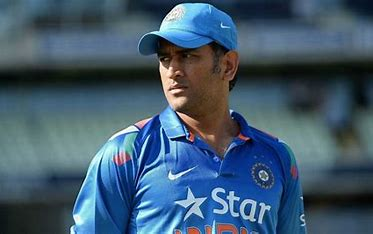

MS Dhoni, one of cricket's greatest captains, is known for his calm demeanor and exceptional finishing skills. He led India to victory in all major ICC tournaments, cementing his legacy as a legend.
"I am always the one who is responsible for anything bad that happens."
Mahendra Singh Dhoni was born on July 7, 1981, in Ranchi, Jharkhand. He grew up in a modest family with a passion for sports, initially excelling in football and badminton. His journey to cricket began when his school coach noticed his wicketkeeping skills during a football game. Balancing his studies and sports, Dhoni pursued his dream, eventually securing a place in the Bihar U-19 team. Before his cricketing career took off, he worked as a Ticket Collector at Kharagpur Railway Station, showcasing his humble beginnings.
MS Dhoni made his international debut in 2004 against Bangladesh. Known for his aggressive batting style, he grabbed attention with a sensational 148 against Pakistan in just his fifth ODI. His fearless approach and powerful hitting soon made him a fan favorite. In 2007, he was appointed as the captain of the Indian T20 team, leading them to victory in the inaugural T20 World Cup. This marked the beginning of a golden era for Indian cricket under his leadership.
Dhoni earned the nickname "Captain Cool" for his calm demeanor, strategic acumen, and ability to handle high-pressure situations. He led India to historic victories, including the 2011 ODI World Cup, ending a 28-year drought, and the 2013 Champions Trophy. Under his captaincy, India also became the No. 1 Test team in 2009. His leadership style, marked by calculated risks and backing young talents, inspired a new generation of cricketers.
MS Dhoni married Sakshi Singh Rawat in 2010, and they have a daughter named Ziva. Off the field, he is known for his love for bikes, owning a stunning collection of vintage and modern motorcycles. Dhoni is also an avid pet lover and enjoys spending his leisure time with his dogs. Despite his global fame, he maintains a grounded lifestyle, staying connected to his roots in Ranchi.
Post-retirement from international cricket in 2020, Dhoni continues to inspire as the captain of Chennai Super Kings in the IPL. Besides cricket, he has ventured into business, owning stakes in sports teams like Chennaiyin FC and Ranchi Rays. Dhoni is also involved in movie production and farming. His biopic, "MS Dhoni: The Untold Story," became a blockbuster, showcasing his inspiring journey. MS Dhoni was honored with the rank of Lieutenant Colonel in the Indian Territorial Army in 2011, recognizing his contribution to Indian sports. A true patriot, he completed para-jump training and served with the Victor Force in Kashmir in 2019, performing guard duties and patrolling. Dhoni actively supports the welfare of soldiers and their families, inspiring the youth with his dedication to the nation. His patriotism and humility make him a symbol of national pride and respect.
MS Dhoni is celebrated not only as one of the greatest captains in cricket history but also as a role model for his humility, leadership, and work ethic. His journey from a small-town boy to a global icon continues to inspire millions. Dhoni's legacy goes beyond records; it's about the values he represents – perseverance, calmness, and never giving up.
Sachin Tendulkar: "Dhoni is the best captain I have played under."
Virat Kohli: "MS Dhoni will always be my captain. He is the one who guided me when I was young."
Ravi Shastri: "Dhoni is one of the greatest captains we’ve ever had. His composure and game awareness are unmatched."
Michael Clarke: "You can't buy experience, and Dhoni is an example of that. He reads the game better than most."
Sourav Ganguly: "He is the most successful Indian captain. He has taken Indian cricket to new heights."